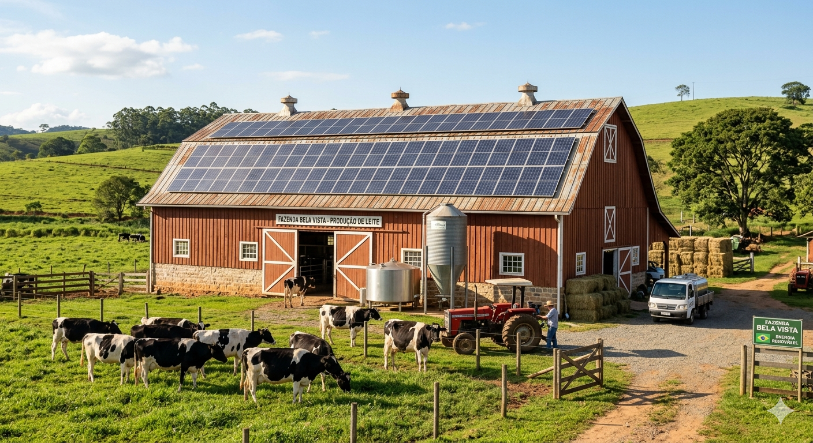

Energia Solar e Redução de Custos
A produção de leite em larga escala exige alta demanda energética para resfriamento rápido do leite e ordenha mecânica. A implementação de placas solares reduz drasticamente o custo operacional fixo, tornando o produtor mais competitivo no mercado.
Benefício direto: Economia de até 95% na conta de luz, permitindo reinvestimento em tecnologia e automação do manejo.

Sistemas Agrivoltaicos e Bem-Estar Animal
O conceito agrivoltaico é a junção de geração de energia e a pastagem na mesma área. Painéis solares suspensos no pasto servem como áreas de sombreamento e descanso para o gado leiteiro e couchos com água limpa e fresca, desse modo protegendo os animais do estresse térmico.
Resultado prático: Vacas confortáveis produzem mais leite e com melhor qualidade, mantendo a produtividade em larga escala mesmo em períodos de muito calor.

Sustentabilidade e Valor de Mercado
O Investimento: Dimensionado de acordo com o consumo da propriedade (com linhas de financiamento agro com juros baixos, onde a parcela substitui a conta de luz). A Economia: Redução de até 95% na fatura de energia já no primeiro mês após a instalação.
O sistema protege os motores das ordenhadeiras e dos tanques de resfriamento contra picos de tensão comuns na rede rural, evitando queimas e prejuízos com manutenção. Garantia de Qualidade: Tanques de resfriamento operando sem interrupções, mantendo a temperatura ideal do leite, o padrão exigido pelos laticínios e o seu bônus por qualidade.